LLM-Harness · 归档于 2026-11-07
AgentMemory
The components of agent memory
Post Cookbook · dreaming Cookbook · knowledge wiki Docs · dreams
归档到 LLM/Harness（新种类）：讲通用 LLM agent harness 的 memory 层（notes、wiki、injected context、dreaming），不限于机器人；第二相关 Robotic harness。
TL;DR
- Problem
- agent 只能在 session 里边做边写 memory，必须预测以后什么有用；记太多会淹没，记错的 note 会被后面的 session 一直信任。
- Idea
- 分层 memory：transcripts → notes → representations（wiki）→ injected context；session 里让模型自己判断 salience，离线用 dreaming 对照 transcript 改错、建 wiki、把要点提到顶层。
- Result
- CL-Bench：Opus 5 0.564→0.828（有 memory）；Pokémon：dreaming 改对一条 note 后第 1935 步到 Cerulean，未改的那次一直没到；wiki + search 61% vs 只用 search 53%。
Problem
在 session 里写 memory 是在猜未来：记什么、记对没有，当下都不知道
Running example · 后面每个 stage 都跟着它走
Claude 玩 Pokémon Red，过 Mt. Moon：一个可读写的 memory 文件夹 + 游戏画面；Mt. Moon 入口在西、出口在东，入口附近有一个单向 ledge，掉下去回到来时的路；Claude 用 PokéCenter 当地标 → 想要：穿过山洞，到 Cerulean City。
flowchart LR IN["例子输入
memory 文件夹 + 画面"] IN --> A1["No memory
每步只看画面"] A1 --> AX["绕不出山
3000 步内没到 Cerulean"]:::gap IN --> B1["什么都记
Sonnet 3.7"] B1 --> BX["状态一变就过时
413 文件，1 个 badge"]:::gap IN --> C1["固定写规则
#quot;只记失败#quot;"] C1 --> CX["丢掉有用的规则
Opus 5 增益 −0.234"]:::gap IN --> D1["Raw memory
只在 session 里写"] D1 --> DX["错 note 被信任
掉 ledge 3 次，回 Pewter"]:::gap
第 3 条的数字来自 CL-Bench（Fig. 5 右），不是 Pokémon：文中没在 Pokémon 上试固定规则。第 2 条是 Sonnet 3.7 约 10,000 步时的文件夹（Fig. 4），和其他几条不是同一次实验。
根本问题：salience 只能当下判断，而 note 可能一开始就错，或随环境变化过时，下一个 session 还会照单全收。 这篇的切入点：session 里只告诉模型 memory 是干什么的，让它自己判断；再用离线的 dreaming 回看 transcript，改错、整理、提炼。
Related work
| 相关工作 | 解决什么 | 怎么解决 | 和本文的区别 |
|---|---|---|---|
| 同一问题 · 别的解法 | |||
| Transcript search 给 agent 一个搜原始日志 / 文档的工具 | 跨 session 找回过去的信息 | 需要时直接搜原文 | 没有抽象，跨文档的问题要自己拼 → 本文在 search 之上加 dreaming 建的 wiki（53% → 61%） |
| Compaction / in-context learning Claude compaction | 一个任务内上下文放不下 | 用摘要替换旧的 turn | 只活在当前任务里，不跨 session → 本文的 memory 存成文件，下个 session 还能读 |
| Weight updates fine-tuning / continual learning | 把经验变成能力 | 改模型参数 | 不可读、不可改 → 本文把经验存成 Claude 自己能读、能纠错的 context |
| 相似做法 · 别的问题 | |||
| Sleep-time compute Letta & UC Berkeley 2504.13171 | 交互间隙的空闲算力 | 空闲时预先重组已有 context | 重组 context，不碰错误 → 本文拿 transcript 当 ground truth 来改 memory note |
| LLM wiki Karpathy 的 wiki gist（文中链接） | 大语料的知识组织 | LLM 写互相链接的页面 | 一次性整理 → 本文分 128 个 session 增量建、改、合并，并用 dreaming 补断链 |
| Claude Code auto memory MEMORY.md 索引 | 每个 session 开头带什么 | 只加载前 200 行或 25 KB 当索引 | 由 Claude 在 session 里顺手维护 → dreaming 离线维护这一层，细节下沉、留链接 |
来源：博客正文和它链接的页面（sleep-time compute、wiki、compaction、Claude Code memory）。这是一篇博客，不是论文，没有 related-work 节；未另行检索。
Level 1 · Big picture
四层 memory，session 写最底下两层，dreaming 离线往上整理
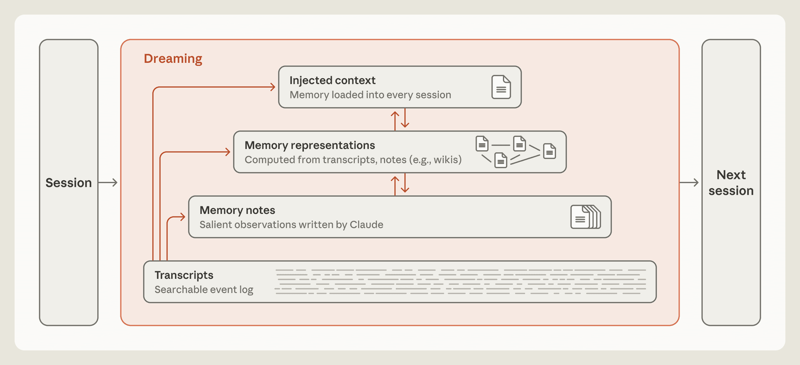
怎么读这张图
- 左 "Session" → 右 "Next session"：memory 只算跨 session 留下来的东西；权重、in-context learning、compaction 都不算。
- 底层 "Transcripts · Searchable event log"：原始日志，是后面所有层的 ground truth。例子里就是 Pokémon 每一步的记录。
- "Memory notes · Salient observations written by Claude"：session 里 Claude 自己挑着写。例子里是 "PokéCenter 在东边"、"Mt Moon DONE"。
- "Memory representations · Computed from transcripts, notes (e.g., wikis)"：右边小图是互相链接的页面。
- 顶层 "Injected context · Memory loaded into every session"：每个 session 一开头就塞进 context，比如 MEMORY.md 的前 200 行。
- 橙框 "Dreaming"：左侧橙色箭头从 Transcripts 往上指向每一层，相邻上层之间双向箭头：dreaming 可以从日志改 note、建 wiki、提到顶层，也能把细节往下挪。
flowchart LR I["Session
过 Mt. Moon"] --> M["Dreaming
对照 transcript 改 note"] M --> O["Next session
回洞，到 Cerulean"]
Level 2 · Stages
1 个在线 stage + 3 个 dreaming stage
flowchart TD S0["0 · Transcripts
每一步的日志"] --> S1["1 · Write notes
Mt Moon DONE"] S1 --> S2["2 · Correct
PokéCenter 在西"]:::win S2 --> S3["3 · Build wiki
222 页，12,893 链接"]:::win S3 --> S4["4 · Promote
global.md 当仪表盘"]:::win click S1 href "#stage-1" click S2 href "#stage-2" click S3 href "#stage-3" click S4 href "#stage-4"
点击 stage 展开 Level 3 细节。贯穿 2–4 的 dreaming 怎么调：Dreaming 的目标和补缺。
Level 3 · Details
每个 stage 的细节
Stage 1 · 在线 Write notes：session 里判断 salience 正在发生的事 → memory 文件夹里的 note
- Why：写下一条规则 = 预测这个模式以后还会用到；写下一个验证过的事实 = 预测以后不用再查。
- 记什么：画面每步都能读到的（钱、位置）不用记；只有自己推出来的策略、计划、验证过的规则，不写就没了。
- 学习回路：答错 → 记下失败 → 提出假设 → 验证 → 变成规则。Sonnet 4.6 停在"一堆没验证的猜测"；Opus 4.7 合并成一份文档并标"已核实 / 未确认"；Opus 5 起闭环：规则 + 怎么知道它对 + 陷阱警告。
- 怎么引导：只告诉模型 memory 是干什么的，不规定怎么用；强模型给固定规则反而掉分，弱模型需要提示"先读 memory、验证假设"。
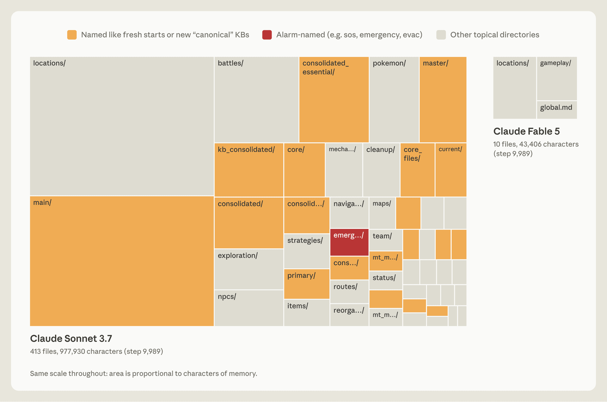
怎么读这张图
- 左大块 "Claude Sonnet 3.7 · 413 files, 977,930 characters"：locations/、battles/、npcs/、items/ 等，每场战斗、每个物品、每个 NPC 一个文件。
- 橙色 "Named like fresh starts or new 'canonical' KBs"：main/、master/、consolidated_essential/、kb_consolidated/……一次次"重新整理"留下的新文件夹。
- 红色 "Alarm-named (e.g. sos, emergency, evac)"：emerg…/，慌了才建的文件夹。
- 右小块 "Claude Fable 5 · 10 files, 43,406 characters"：只有 locations/、gameplay/ 和 global.md。
flowchart LR a["发生了一件事
7 个球没抓到"] --> b["画面能读到吗
不能，是推出来的"] b --> c["写成规则
gameplay/"]
Running example 在这一步
连续 7 个 Poké Ball 没抓到 Magikarp 后，Fable 5 写下："If 3+ balls fail in a row, VARY the timing … the catch landed right after doing this." 到了 Mt. Moon，它从 PokéCenter 出来时写了 "PokéCenter 在东边" 和 "Mt Moon DONE"，这一条是错的（下一个 stage 修）。
Stage 2 · Dreaming Correct：对照 transcript 改错 memory notes + transcripts → 改正后的 notes
- Why：note 可能一开始就错，也可能随环境变化过时；后面的 session 会读到并相信它。
- How：离线时把 note 和原始 transcript 逐条对照，transcript 是 ground truth；发现矛盾就重写 note。
- 环境：Claude Managed Agents，memory 目录挂载进来。
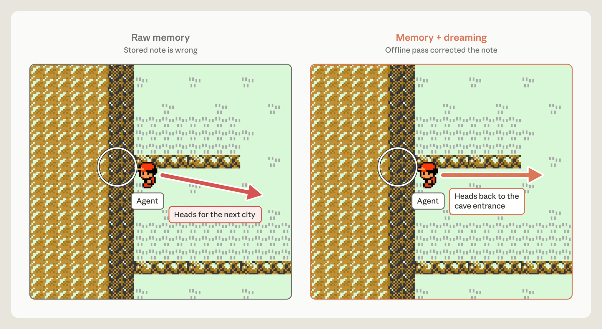
怎么读这张图
- 圆圈：ledge 所在，掉下去就回到来时的路，爬不回去。
- 左 "Raw memory · Stored note is wrong"：红箭头 "Heads for the next city"，Claude 说 "Mt Moon is behind me"，走过 ledge。
- 右 "Memory + dreaming · Offline pass corrected the note"：箭头 "Heads back to the cave entrance"，Claude 说 "Now I need to find the Mt Moon cave entrance to re-enter"。
flowchart LR a["读 note
PokéCenter 在东"] --> b["对照 transcript
其实在西"] b --> c["重写 note
回洞里"]:::win
Running example 在这一步
没改时：掉下 ledge 后导航工具看不到落差，Claude 判断 "I overshot far west"，以为自己一直在对的那边；掉了 3 次后写 "I'm going to stop rather than keep looping"，被自动回复要求继续，一路退回 Pewter City。改后：直接回洞，第 1935 步到 Cerulean（Fig. 8，见 E4）。
Stage 3 · Dreaming Build representations：增量建 wiki transcripts + notes（或文档语料）→ 互相链接的 wiki 页面
- Why：知识库越来越大，需要一张"地图"才能快速找到 memory。
- wiki：Claude 写并维护的页面，每页汇总一个主题，链到其他 note。
- How：多个 session 接力：探索文件 → 写或改页面 → 合并重复 → 对照来源核实；共享一个 log 协调。
- 什么时候有用：问题要跨多个文档拼、要判断或计算时；单文档能搜到的问题没有明显收益。
- 陷阱：wiki 可能比原文还大（1.77×），等于什么都没抽象（Borges 的 1:1 地图）。
flowchart TD a["Session 1–2
103 页，766 链接"] --> b["每轮 dreaming
加、改、删、合并"] b --> c["Session 128
222 页，12,893 链接"]:::win
Running example 在这一步
文中 Pokémon 没有建 wiki，这一层换了语料：Stainless 的内部文档，约 350,000 个文件、约 420M tokens，25 个问题；Opus 5 agents 跑 128 个 session 建 wiki（Fig. 10，见 E5）。
Stage 4 · Dreaming Promote：提到 injected context 下面几层 → 每个 session 开头自动加载的小文件
- Why：提到顶层的 note 不用搜，Claude 甚至不用知道有东西可搜。
- 代价：占 token；一条错 note 会被带进每个 session；加载了也不保证照做（Claude Code 文档：指令文件越长，遵守越差）。
- How：顶层必须小：dreaming 把细节挪到下层，原处留链接。
- Claude Code auto memory：只加载 MEMORY.md 的前 200 行或 25 KB，当索引用：告诉 Claude 知道什么、去哪找。
flowchart LR a["下层细节
locations/ 路线"] --> b["顶层索引
global.md"] b --> c["每个 session 加载
当前目标 + 规则"]
Running example 在这一步
Fable 5 的 global.md 就是一个 dashboard：当前目标、打道馆的预写计划、自己用 memory 的规则；细节在 locations/ 和 gameplay/。文中没说 global.md 是被 harness 自动注入的还是 Claude 自己读的（我的推断：它在形态上就是顶层索引）。
贯穿 2–4 Dreaming 的目标和补缺 任务目标 + 失败分析 → 改写后的 dreaming 指令；多 session → 补齐的 wiki
- Focus：dreaming 指令要说明什么信息真正重要（例：助手类产品 Claude Duet 的 memory 围绕所服务的人组织）。
- 自动找指令：循环 = Claude 反思失败 → 提议改指令 → 重建 wiki。
- Fill gaps：单个 session 只看得到自己的 context；dreaming 跨 session 找共同模式和断链。
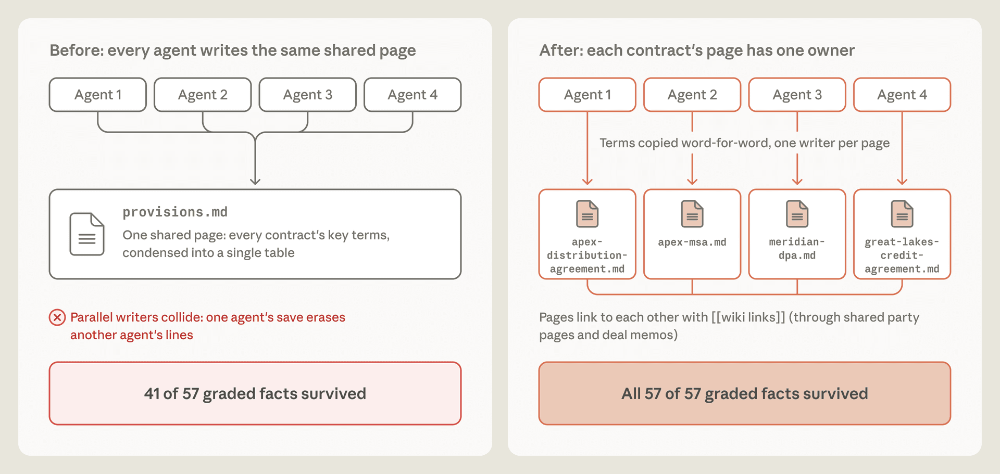
怎么读这张图
- 左 "Before: every agent writes the same shared page"：Agent 1–4 都写 provisions.md（所有合同条款压成一张表）；"Parallel writers collide: one agent's save erases another agent's lines" → 41 of 57。
- 右 "After: each contract's page has one owner"：每个 agent 写一个合同页（apex-msa.md、meridian-dpa.md…），"Terms copied word-for-word"，页面之间用 [[wiki links]] 相连 → 57 of 57。
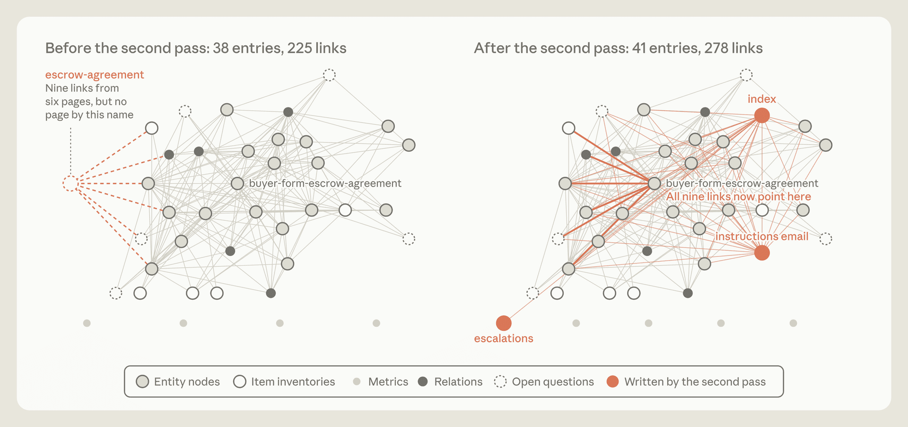
- 左 "Before the second pass: 38 entries, 225 links"：虚线圆 escrow-agreement，"Nine links from six pages, but no page by this name"。
- 右 "After the second pass: 41 entries, 278 links"：9 条链接改指向已有的 buyer-form-escrow-agreement；橙色是新写的 3 页：index、instructions email、escalations。
Recap：例子覆盖了文中的哪些 idea
| 文中的 idea | 例子里在哪体现 |
|---|---|
| memory = 跨 session 的可读 context | Level 1：Pokémon 的 memory 文件夹 |
| memory 是对未来的预测；salience 判断 | Stage 1：Fable 5 只记推出来的规则，Sonnet 3.7 什么都记 |
| 告诉用途、不规定用法 | Stage 1 + E3：只记失败让 Opus 5 掉 0.234 |
| dreaming 对照 transcript 改错 | Stage 2：PokéCenter 东→西，第 1935 步到 Cerulean |
| wiki 表示 + search | Stage 3：换成 Stainless 语料（Pokémon 没建 wiki） |
| 顶层要小（injected context） | Stage 4：global.md、MEMORY.md 200 行 |
| 按目标调 dreaming；跨 session 补缺 | 贯穿：换成 LAB 合同任务（41→57 of 57）、断链修复 |
Results
强模型自己会用 memory；dreaming 能改错、建出比 search 更有用的 wiki，但不是处处有用
顺序同博客：E1 有 memory 有没有用 → E2 记什么 → E3 要不要规定怎么记 → E4 dreaming 改错 → E5 wiki 何时有用 → E6 调 dreaming 指令和补缺。比的是任务分数和进度，只有 E5 报了 token。
E1有了 memory 目录，模型能不能自己形成学习回路？CL-Bench · Fig. 3
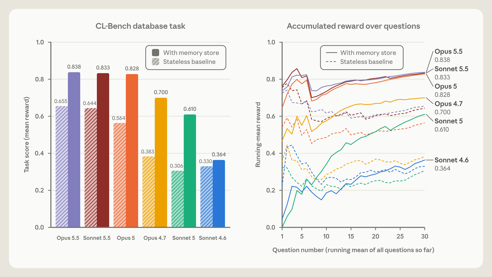
- 说明什么
- 新模型从 memory 里得到的提升大得多。Opus 5 0.564 → 0.828，Opus 4.7 0.383 → 0.700，Sonnet 5 0.306 → 0.610；Sonnet 4.6 只有 0.330 → 0.364。Opus 5.5 0.655 → 0.838、Sonnet 5.5 0.644 → 0.833：有 memory 和 Opus 5 持平，baseline 更高。
- 在故事里
- Stage 1 的前提：强模型能自己闭合"失败 → 假设 → 验证 → 规则"。
- 指标
- 任务分数 = mean reward；答完后告诉正确答案，可以写 memory。
- 怎么评测
- CL-Bench 1.0 的 database 任务：查数据库回答一串问题（图上 30 个）。
- Claude Managed Agents，每题一个新 session，只有 memory 目录跨 session 保留。
- Fig. 3 没写 run 数；Fig. 5 写 Opus 5 有 memory 是 16 runs、Opus 4.7 是 3 runs。
E2模型会不会判断什么值得记？Pokémon · Fig. 4
数字来自正文，图见 Stage 1 的 Fig. 4。
| 约 10,000 步时 | 文件 | 文件夹 | 字符 | badge |
|---|---|---|---|---|
| Sonnet 3.7 | 413 | 225 | 977,930 | 1 |
| Fable 5 | 9 + global.md | 2 | 43,406 | 4 |
- 说明什么
- memory 小得多，进度远得多。Sonnet 3.7 在第 10,000 步左右开了第 4 个 "master" 文件夹，接下来 17 步建 6 个文件、删 9 个，游戏里一步没走。Opus 5.5 用类似的小文件夹通关。
- 在故事里
- 说明 salience 判断是模型能力，记得多不等于记得好。
- 指标
- badge 数（游戏进度）。
- 怎么评测
- 每个模型一次 run，开局给一个可读写的 memory 文件夹。
- 两个模型隔了好几代，harness 是否相同文中没说（我的推断：差异不全来自 memory）。
E3要不要告诉模型"怎么记"？CL-Bench · Fig. 5
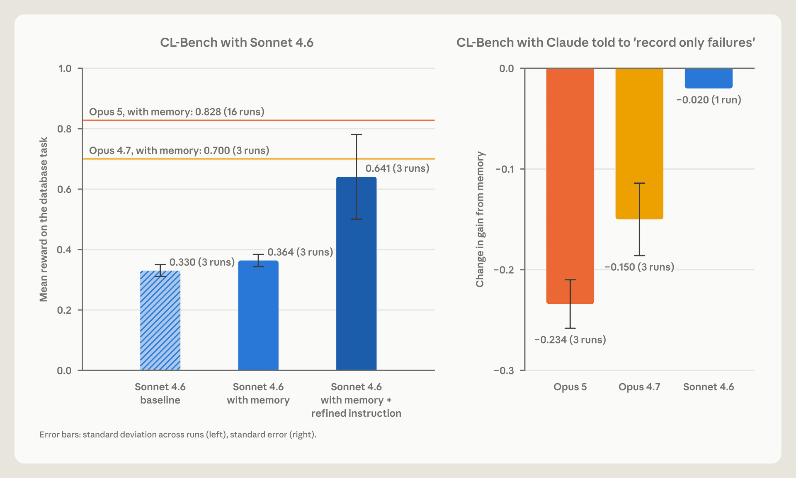
- 说明什么
- 弱模型需要提示，强模型被规则拖累。Sonnet 4.6：0.330 → 0.364（memory）→ 0.641（memory + "先读 memory、验证假设"）。"只记失败"：Opus 5 −0.234，Opus 4.7 −0.150，Sonnet 4.6 −0.020。Sonnet 5 不用提示，10 次里 9 次先读 memory；Sonnet 4.6 不到一半。
- 在故事里
- Stage 1 的做法："告诉 memory 是干什么的，不规定怎么用"。
- 指标
- 左：mean reward；右：增益的变化 = 有规则时 memory 带来的增益 − 没规则时的增益。
- 怎么评测
- 左图每根柱 3 runs，误差棒为标准差；Sonnet 4.6 加提示后 0.641 的误差棒很宽（约 0.50–0.78）。
- 右图 Opus 5、Opus 4.7 3 runs，Sonnet 4.6 只有 1 run；误差棒为标准误。
- 每条规则单独测一次；文中只给了"只记失败"这一条的结果。
E4dreaming 改对一条 note，能改变结果吗？Pokémon · Fig. 8
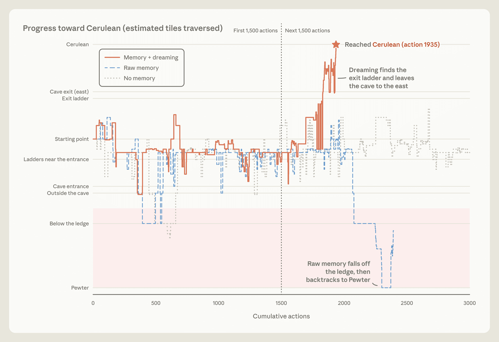
- 说明什么
- 改对一条 note 就过了山。Memory + dreaming 在第 1935 步到 Cerulean；Raw memory 掉下 ledge、退回 Pewter；No memory 3000 步内没到。
- 在故事里
- Stage 2：transcript 是 ground truth，dreaming 能修正 session 里写错的东西。
- 指标
- 是否到达 Cerulean，以及估计走过的格子数（图标题 "estimated tiles traversed"）。
- 怎么评测
- 同一个含错误 note 的 memory 文件夹：一次直接用，一次先跑 dreaming 再用；另有一次无 memory。
- 每种一次 run；dreaming 针对的正是已知的错误（我的推断：这是案例展示，不是统计结果）。
E5dreaming 建的 wiki 什么时候比直接搜有用？Stainless · merger · LAB · Fig. 10–12
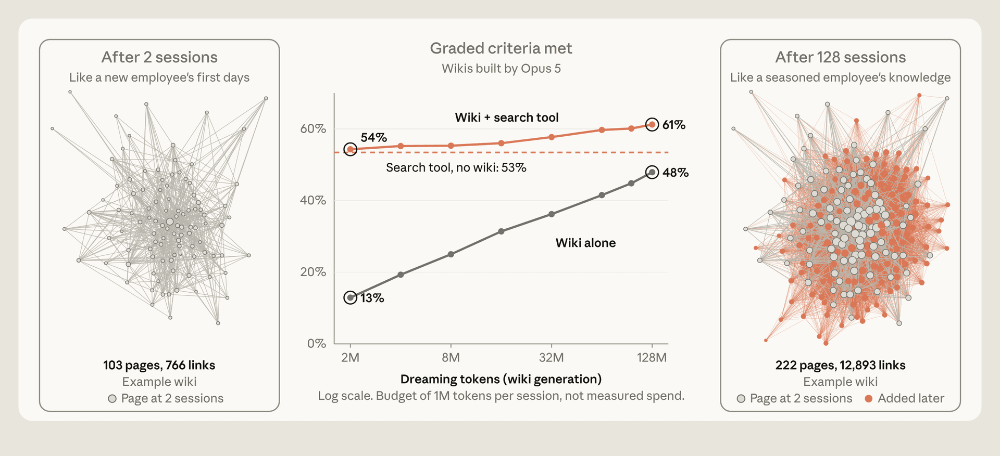
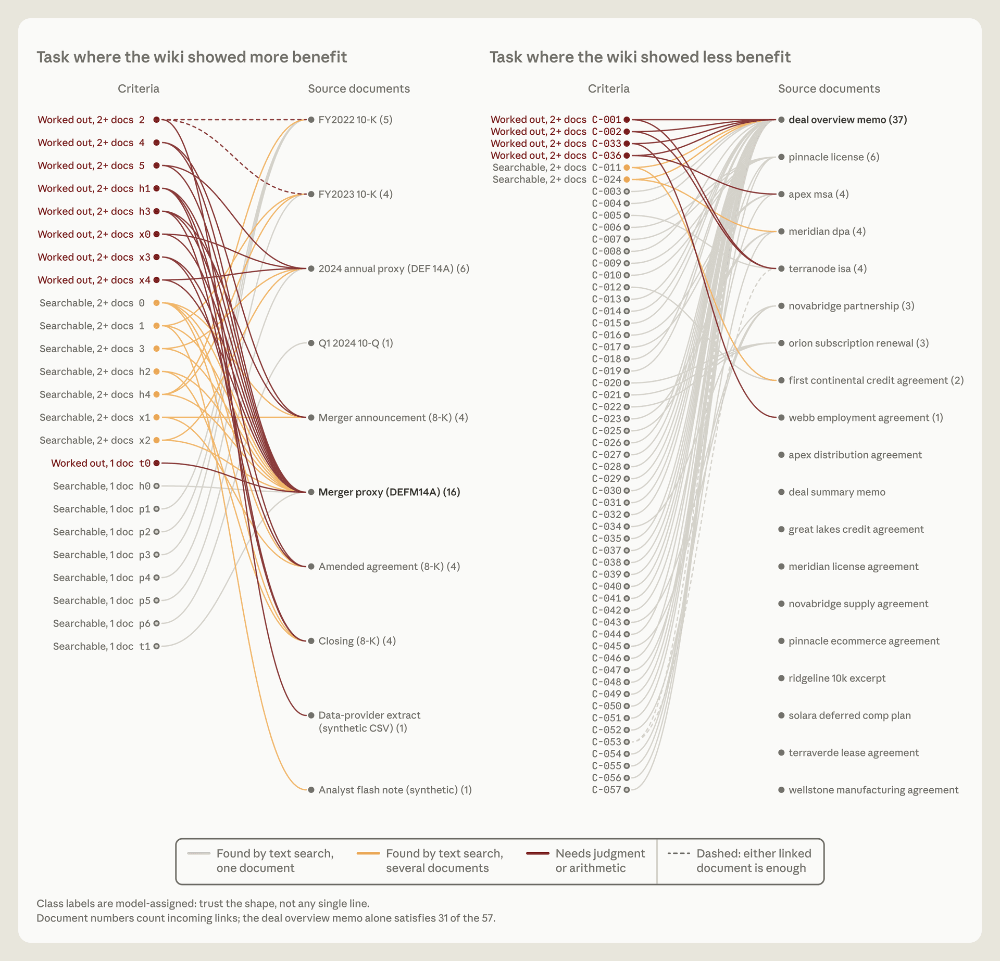
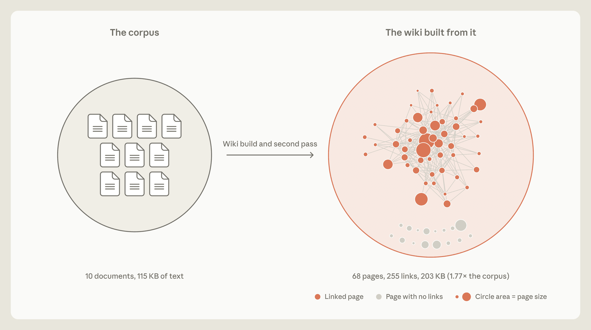
- 说明什么
- 跨文档的问题，wiki + search 比只用 search 更好，也更省。Stainless：wiki 单用 13% → 48%，wiki + search 54% → 61%，只 search 53%；每题省约 20,000 tokens。merger 跨文档条目：wiki 87% vs search 73%。单文档能搜到时没有明显收益；有一次 wiki 比原文还大。
- 在故事里
- Stage 3：wiki 是导航地图，配合 search 用，不能代替 search。
- 指标
- 满足的评分条目百分比（graded criteria）；LAB 的 brief 按条目清单评分。
- 怎么评测
- Stainless：约 350,000 文件、约 420M tokens，25 题；Opus 5 agents 跑 128 个 session 建 wiki，共享 log 协调。
- merger：24 题，一半以上要跨文档，很多要判断或计算；LAB（Harvey）：按文档写法律 brief。
- 文中没说评分者是人还是模型，也没给 run 数（Fig. 11 注明类别标签由模型分配）。
E6调 dreaming 指令、再跑一遍，能补上缺失吗？LAB · Fig. 14–15
图见 贯穿 2–4 的 Fig. 14、Fig. 15。
- 说明什么
- 指令说清"什么重要"，事实就不丢。共享表格 41/57（72%）→ 每合同一页、逐字引用后 57/57（100%）。第二次 dreaming：38 条目 225 链接 → 41 条目 278 链接，9 条断链改指向已有页面，新增 3 页（含 index）。
- 在故事里
- 贯穿机制：dreaming 的目标要按任务调，而且能跨 session 补单个 session 留下的缺口。
- 指标
- 用 wiki 生成的 brief 里，被评分的合同事实满足了几条。
- 怎么评测
- LAB 的模拟收购任务，一组合同；改指令由"反思失败 → 改指令 → 重建 wiki"循环完成。
- 单个任务的案例，没有重复次数。
Limits
局限和开放问题
- 作者：什么时候写 memory？在线写会分散主任务的注意力；dreaming 放到后台，但结果不能马上用上。
- 作者：怎么保持更新？全量检查太贵；也许只 dream 容易变的信息，或按访问频率调节频率。
- 作者：也可以把 transcript search 当 memory 的地基；维护 wiki 要花算力，还要防止累积错误和幻觉。
- 我的推断：大多是单次 run 的案例（Pokémon、E6），只有 CL-Bench 报了多次 run 和误差棒。
- 我的推断：跨模型比较里模型代差很大（Sonnet 3.7 vs Fable 5），memory 之外的能力差异没有拆开。
For LLM/Harness
对我们有什么用
- robot-harness 的 Supervisor evidence = transcripts 层：可以加一个离线 dreaming pass，用 evidence 校验 skill library 里的规则，过时或错的就改。
- skill / memory 指令：只说用途、不规定"只记失败"之类的规则；强模型被固定规则拖累（E3）。
- 这个 paper library 本身就是一个 wiki：index.html 当顶层索引，保持小；共享页面不让多个 agent 同时写（Fig. 14 的覆盖问题，我们的 index.html 冲突同理）。